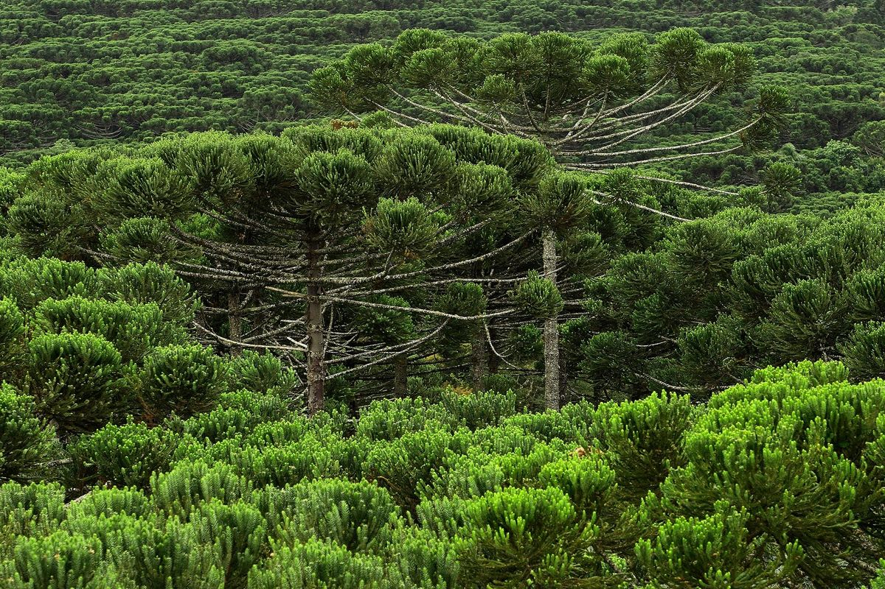
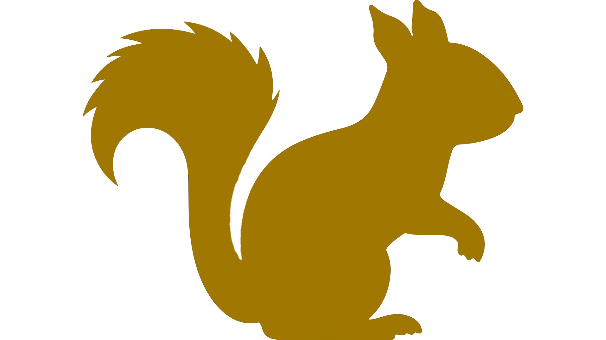
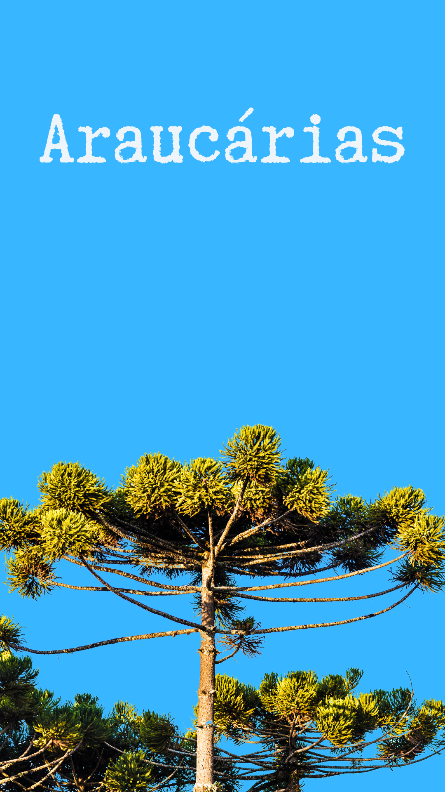
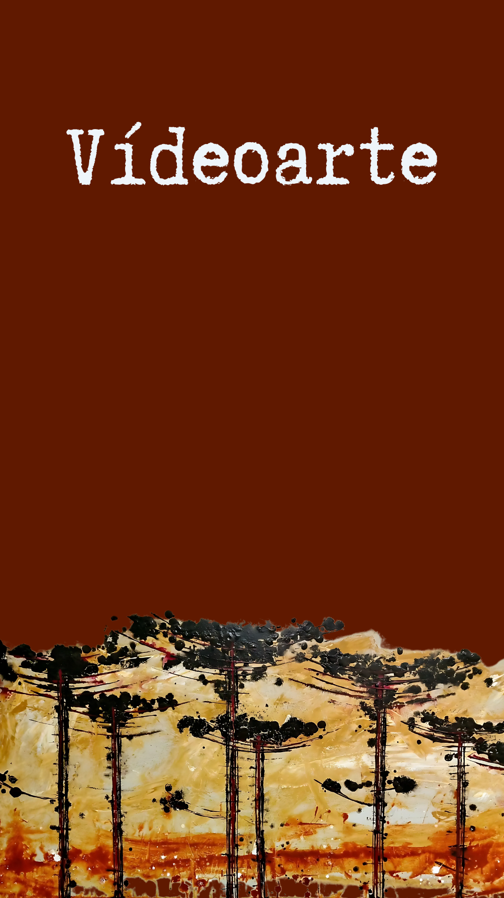

SOB A SOMBRA DA ARAUCÁRIA
Resistência, sustento e tradição

O Projeto Araucária é uma iniciativa artística que busca sensibilizar os públicos social e empresarial sobre a preservação da árvore símbolo da Mata Atlântica, por meio de uma videoarte.

As Magníficas Araucárias
Conheça a Araucaria angustifolia, uma das árvores mais icônicas do Brasil, símbolo da Mata Atlântica e fundamental para a biodiversidade!

As araucárias são um legado da natureza e da história. Preserve, valorize e compartilhe essa riqueza!

Uma arvore em risco com um ecossistema inteiro depende delas: aves, mamíferos, fungos e até o homem.
A espiritualidade Kaingang está profundamente conectada à natureza, especialmente às araucárias.
Conheça nosso time de profissionais, que procuram espalhar arte sobre as araucárias e mostrar sua importância.
Ajude as outras iniciativas do nosso grupo, que também unem preservação da naturaza e a arte.

Contatọ̣: (41)99105-7418